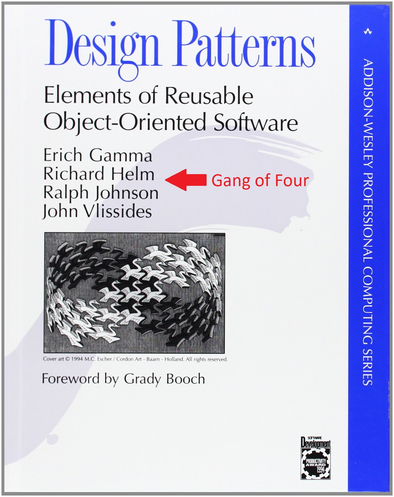
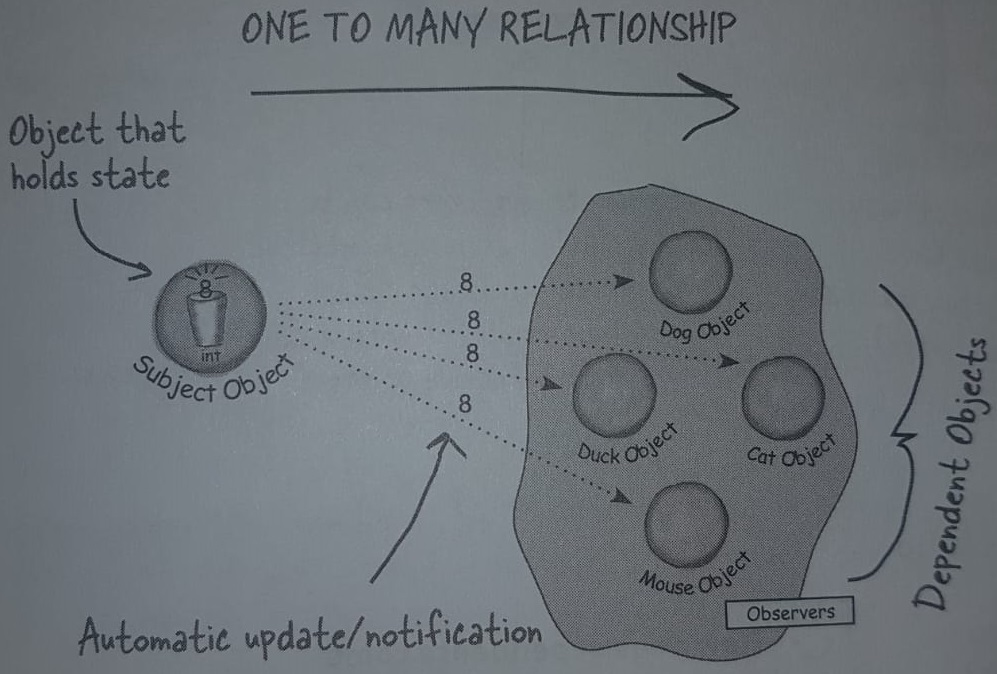
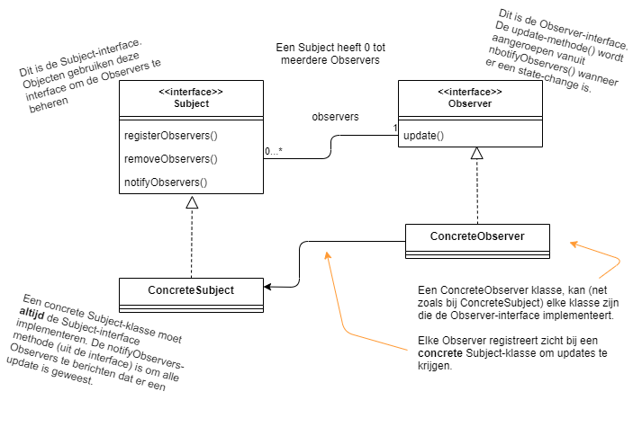

Design Patterns & Clean Code
Les 1 - Design patterns
Inhoud
- Wat zijn Design Patterns?
- Soorten Design Patterns
- Observer Pattern
- Builder Pattern
- Opdrachten maken
H & H
- Webcam aan
- Microfoon uit wanneer anderen spreken
- Gaarne hand opsteken
Wat zijn Design Patterns?
Wat zijn Design Patterns?
Design patterns zijn herhaalbare oplossingen voor vaak voorkomende code-problemen. Dit zijn geen kant-en-klare oplossingen, maar beschrijvingen van een template voor een oplossing.
Geschiedenis

Geschiedenis (2)
Soorten Design Patterns
Op te delen in drie groepen
- Creational
- Structural
- Behavioural
Creational Design Patterns
- Hebben iets te maken met object-creatie
- Zowel met het object vormgeven als object instantiëren.
Structural Design Patterns
- Hebben te maken met relaties tussen klassen
- Van meerdere klassen een groter geheel maken
Behavioural Design Patterns
- Helpen met communicatie tussen verschillende objecten
- Verhogen hierdoor de flexibiliteit van de code.
De 23 patterns
Creational
- Abstract Factory
- Builder
- Factory Method
- Object Pool
- Prototype
- Singleton
Structural
- Adapter
- Bridge
- Composite
- Decorator
- Facade
- Flyweight
- Private Class Data
- Proxy
Behavioural
- Chain of Responsibility
- Command
- Interpreter
- Iterator
- Mediator
- Memento
- Null Object
- Observer
- State
- Strategy
- Template Method
- Visitor
De 2 patterns
Creational
- Abstract Factory
- Builder
- Factory Method
- Object Pool
- Prototype
- Singleton
Structural
- Adapter
- Bridge
- Composite
- Decorator
- Facade
- Flyweight
- Private Class Data
- Proxy
Behavioural
- Chain of Responsibility
- Command
- Interpreter
- Iterator
- Mediator
- Memento
- Null Object
- Observer
- State
- Strategy
- Template Method
- Visitor
Observer Pattern
Het observer pattern specificeert communcatie tussen de observer-objecten en het observable object. Het observable object communiceert aan de observer-objecten wanneer zijn state veranderd.
Voorbeeld (1)
Voorbeeld (2)
Denk aan een abonnementsdienst
UML
Voor- en nadelen
- Loose coupling
- Observers kunnen runtime beheerd worden
- In de basis houdt het geen rekening of iedereen wel een notificatie mag ontvangen
Voorbeeldcode
Hier te vinden
Builder Pattern
Separate the construction of a complex object from its representation so that the same construction process can create different representations.
Builder Pattern
Het Builder Pattern wordt gebruikt om de creatie van het object te scheiden in kleine stappen waar in de laatste stap het gemaakte object wordt gegeven. Deze stappen zijn zo generiek mogelijk opdat er verschillende invullingen van hetzelfde object gemaakt kunnen worden.
Het Probleem
De klasse moet immutable zijn:
Stel nou je hebt een Customer-object waarin je firstName, lastName en sex verplicht moet bijhouden, maar jouw applicatie moet ook address, postalCode en phoneNumber kunnen bijhouden. De laatste drie mogen echter leeg zijn.
Denk er even over na
Probleem - oplossingen
- 8 constructors aanmaken
- 1 Constructor met null waardes
Het probleem (2)
Kijk naar de code op de volgende slide
Wat gaat hier fout?
public class ImmutableBankAccount {
private double interest;
private double amount;
public ImmutableBankAccount(double interest, double amount) {
this.interest = interest;
this.amount = amount;
}
}
public class BankAccountMain {
public static void main(String[] args) {
ImmutableBankAccount bankAccount =
new ImmutableBankAccount(2.5, 100.0);
ImmutableBankAccount anotherBankAccount =
new ImmutableBankAccount(1250.0, 1.0);
}
}
Voor- en nadelen
- Voegt meer code toe. Je moet voor elke domeinklasse en builder-klasse maken
- Wat lastiger te koppelen met JPA-klassen (Spring-boot)
- Maakt de code enorm leesbaar
Voorbeeldcode
Nog even dit
- Voorbeelden wijken af van het officiële builder-pattern
- Je komt ook vaak voorbeelden tegen met een inner-class en een private constructor
Design patterns in de praktijk
- Wanneer je ergens een pattern gebruikt, weten andere programmeurs direct hoe de code eruit ziet.
- Het gebruiken van patterns is een hulpmiddel, geen doel.
- Vaak bedenken de architecten welke patterns gebruikt moeten worden.
- Zorg eerst voor werkende code, voordat je over patterns gaat nadenken.
Verder studeren (1)
- Twee behandeld
- Nog heel veel meer.
Websites:
- https://howtodoinjava.com/gang-of-four-java-design-patterns/
- https://refactoring.guru/design-patterns
- https://sourcemaking.com/design_patterns
- Google: Design Pattern + naam + Java
Boeken
- Head First: Design Patterns
- Patterns of Enterprise Application Architecture (outdated)
- Java Design Patterns (lekker dun)
- GoF boek (C++)
- Design patterns: Elements of Reusable Object-Oriented Software
Opdrachten (voor in de les)
ObserverBuilder